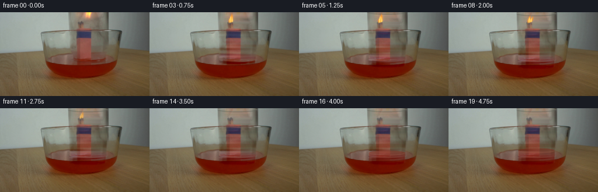
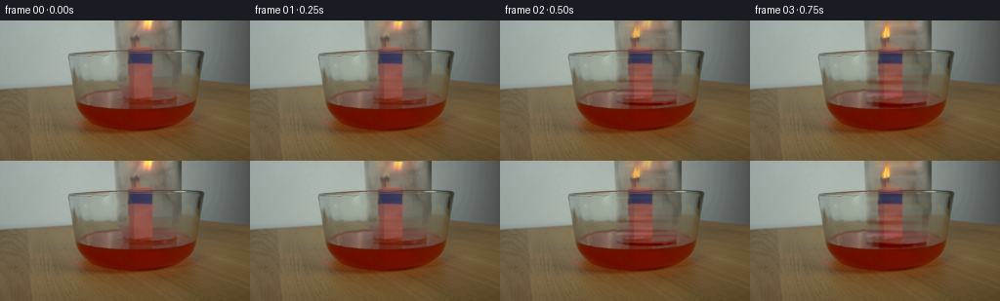
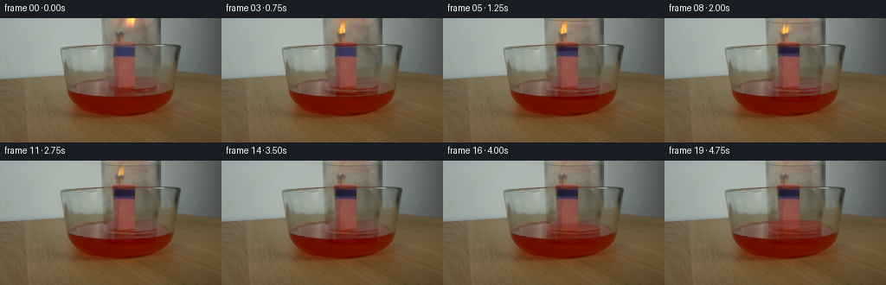
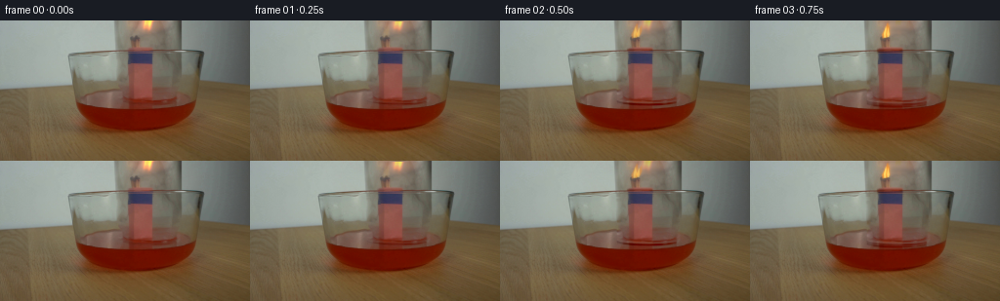
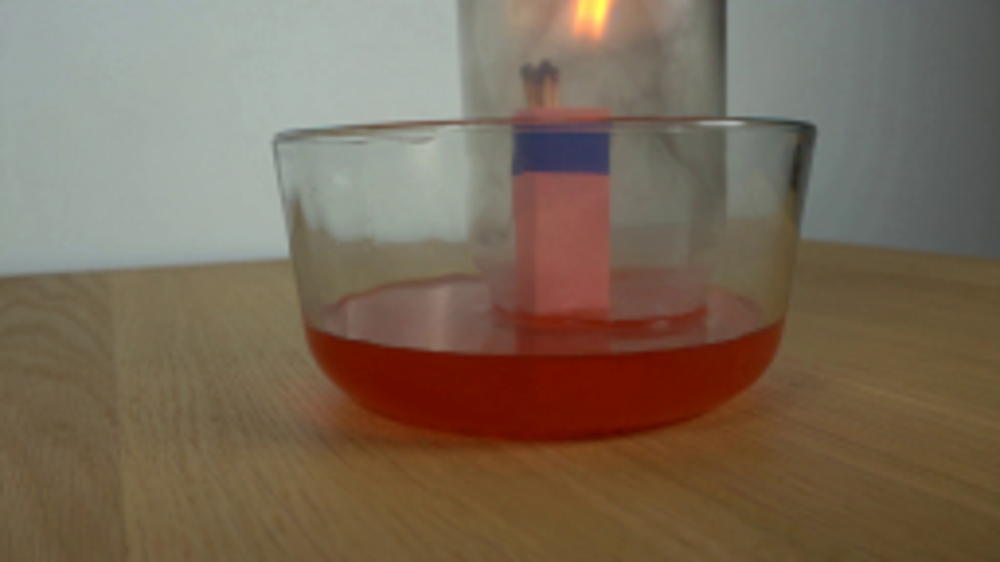
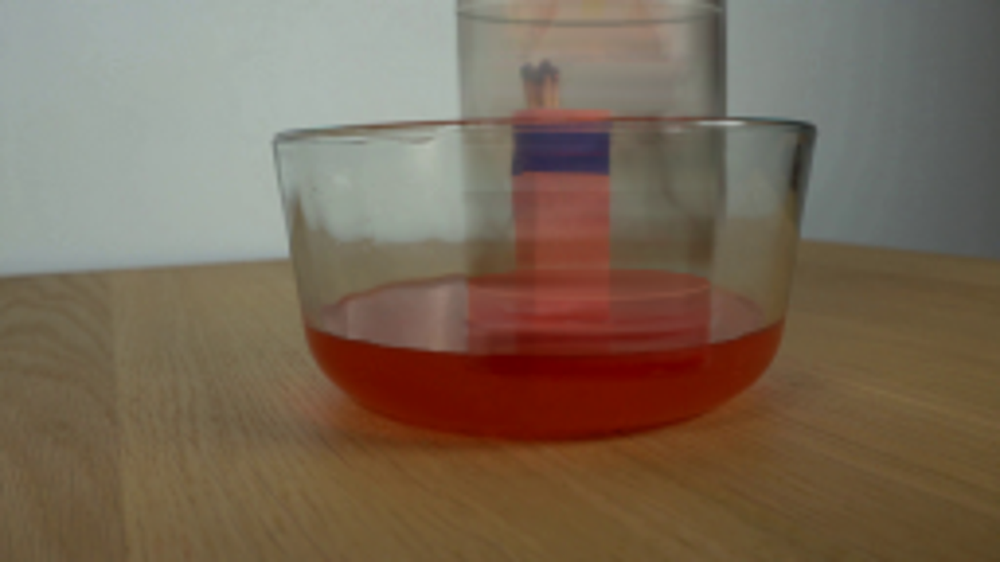
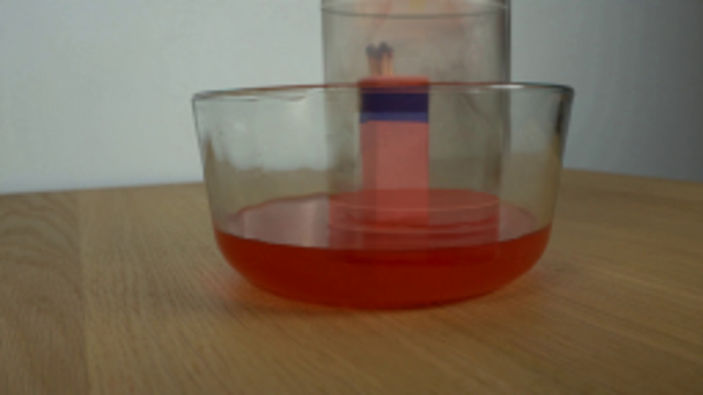

CODING AGENTS AS PIXEL WORLD MODELS
traex/GPT-6.1-Sol · 0163
点击播放 · 原生 RGB 像素
逐轮保存的候选
回放视频、检查图与代码变化。
每份候选均可单独播放。实际图片检查记录在下方工具轨迹中。
候选 01播放与检查图
点击播放 · 原生 RGB 像素


展开代码变化
--- 上一保存版本
+++ 本次保存版本
@@ -0,0 +1,187 @@
+from pathlib import Path
+import numpy as np
+from PIL import Image, ImageDraw, ImageFilter
+from scipy.ndimage import gaussian_filter, map_coordinates
+import artifact_io
+
+ROOT=Path(__file__).resolve().parent
+H,W=144,256
+Y,X=np.mgrid[:H,:W].astype(float)
+SOURCE=np.array(Image.open(ROOT/'first_frame.png').convert('RGB'),dtype=float)
+
+def smooth(a,b,x):
+ z=np.clip((x-a)/(b-a),0,1)
+ return z*z*(3-2*z)
+
+def maskdraw(drawfun,blur=.45):
+ scale=4
+ im=Image.new('L',(W*scale,H*scale))
+ d=ImageDraw.Draw(im)
+ drawfun(d,scale)
+ im=im.resize((W,H),Image.Resampling.LANCZOS)
+ if blur: im=im.filter(ImageFilter.GaussianBlur(blur))
+ return np.asarray(im,dtype=float)/255
+
+def layer(frame, color, mask):
+ return frame*(1-mask[...,None])+np.asarray(color)*mask[...,None]
+
+# Divide the reference photograph into the fixed apparatus and the optical
+# contribution of the glass. Everything here is derived from the one supplied
+# photograph; there are no imported textures.
+clean=SOURCE.copy()
+for y in range(90):
+ left=110 if y<69 else 111
+ right=193 if y<69 else 190
+ a=np.mean(SOURCE[y,max(0,left-2):left+2],axis=0)
+ b=np.mean(SOURCE[y,right-1:right+3],axis=0)
+ u=np.clip((np.arange(W)-left)/(right-left),0,1)
+ clean[y]=a[None,:]*(1-u[:,None])+b[None,:]*u[:,None]
+# Finely taper the mouth of the jar, which is an ellipse in perspective.
+cx=151.1
+rad=34.1
+r=(X-cx)/rad
+lower=79.6+5.3*np.sqrt(np.maximum(0,1-r*r))
+leftedge=117.0+1.8*np.clip(Y/80,0,1)
+rightedge=185.6-3.9*np.clip(Y/80,0,1)
+jar_mask=smooth(leftedge-1,leftedge+1.4,X)*(1-smooth(rightedge-1.5,rightedge+1,X))*(1-smooth(lower-.7,lower+1.4,Y))
+D=SOURCE-clean
+# The match bundle and its rectangular support belong to the fixed apparatus.
+# Interpolate only the glass contribution across these foreground objects.
+for y in range(86):
+ if y<16: l,h=128,172
+ elif y<28: l,h=132,147
+ else: l,h=129,158
+ for x in range(l,h):
+ u=(x-l)/(h-l)
+ D[y,x]=D[y,l-1]*(1-u)+D[y,h]*u
+# Do not drag the bowl's horizontal rim down along with the inverted jar.
+for y in range(29,36):
+ u=(y-28)/8
+ D[y]=D[28]*(1-u)+D[36]*u
+# Some bowl-surface details, unlike the darker glass rim, remain stationary.
+D=gaussian_filter(D,sigma=(.5,.45,0))*jar_mask[...,None]
+base=SOURCE-D
+# Remove just the actual luminous flame from the stationary image, preserving
+# the match heads beneath it and the glass reflection behind it.
+flamereg=(X>134)&(X<166)&(Y<16)
+fire_original=np.zeros_like(SOURCE)
+for y in range(16):
+ for x in range(134,167):
+ u=(x-133)/34
+ bg=base[y,133]*(1-u)+base[y,167]*u
+ # Preserve the dark lower wick and replace the warm light above it.
+ strength=(1-smooth(8,16,y))*smooth(134,142,x)*(1-smooth(160,167,x))
+ if y<9: strength=max(strength,(1-smooth(156,164,x))*smooth(140,146,x))
+ fire_original[y,x]=np.maximum(0,base[y,x]-bg)*strength
+base-=fire_original
+
+# Moving mouth reflection is especially important: it identifies the actual
+# downward motion, whereas glass sidewalls are almost translationally invariant.
+def mouth_masks(dy,dx):
+ x0=(119.6+dx)*4; x1=(182.7+dx)*4
+ y0=(75.9+dy)*4; y1=(85.2+dy)*4
+ rear=maskdraw(lambda d,s:d.arc([x0,y0,x1,y1],180,360,fill=170,width=4),.55)
+ front=maskdraw(lambda d,s:d.arc([x0,y0,x1,y1],0,180,fill=200,width=5),.5)
+ return rear,front
+
+frames=[]
+for n in range(20):
+ t=n/4
+ if n==0:
+ frames.append(SOURCE.astype(np.uint8)); continue
+ descend=12.0*smooth(.05,1.8,t)
+ dx=-.6*smooth(.05,1.8,t)
+ coords=np.array([Y-descend,X-dx])
+ moved=np.stack([map_coordinates(D[...,c],coords,order=1,mode='nearest') for c in range(3)],axis=-1)
+ # In the part of the jar newly entering the liquid, transmission is reddish
+ # rather than the neutral tint of the wall.
+ moved*= (1-.62*smooth(86,98,Y))[...,None]
+ frame=base+moved
+ # The reflective closed end descends into view from above the camera edge.
+ top=-9.5+descend
+ cap=maskdraw(lambda d,s:d.ellipse([(117.3+dx)*s,(top-3.5)*s,(185.2+dx)*s,(top+4.1)*s],fill=255),.65)
+ caprim=maskdraw(lambda d,s:d.arc([(117.3+dx)*s,(top-3.5)*s,(185.2+dx)*s,(top+4.1)*s],0,180,fill=255,width=5),.55)
+ capback=maskdraw(lambda d,s:d.arc([(117.3+dx)*s,(top-3.5)*s,(185.2+dx)*s,(top+4.1)*s],180,360,fill=255,width=4),.5)
+ frame=layer(frame,[139,144,132],cap*.16)
+ frame=layer(frame,[72,77,68],caprim*.48)
+ frame=layer(frame,[180,188,174],capback*.4)
+ # Thin light glints are anchored on the glass and travel with it.
+ front,rear=mouth_masks(descend,dx)
+ appear=smooth(.1,1.7,t)
+ frame=layer(frame,[120,72,53],rear*.18*appear)
+ frame=layer(frame,[155,116,92],front*.22*appear)
+
+ # Real-time combustion: tall flickering flames, diminishing in the closed
+ # vessel, then extinction and a small curl of smoke.
+ burn=1-smooth(2.4,3.3,t)
+ initial=1-smooth(.15,.8,t)
+ flick=.91+.1*np.sin(15.3*t)+.055*np.sin(29.2*t)
+ coordfire=np.array([Y+.7*np.sin(13*t),X-1.0*np.sin(11*t)])
+ for c in range(3):
+ frame[...,c]+=map_coordinates(fire_original[...,c],coordfire,order=1,mode='constant')*initial*flick
+ height=(17+2*np.sin(12*t)+1.5*np.cos(21*t))*burn
+ height=min(height, max(3,17-(top+1.5)))
+ if burn>.005:
+ # A flowing contour gives the flame its narrow bright base and tapered,
+ # asymmetric upper tip. A secondary small flame belongs to another match.
+ for k in range(2):
+ footx=138.4+3.0*k
+ footy=18.5-.6*k
+ ht=height*(1-.15*k)
+ side=1.1*np.sin(12*t+k*2)+1.1
+ width=(2.3-.6*k)*burn*flick
+ pts=[(footx-1.3*width,footy),(footx-1.6*width,footy-ht*.27),
+ (footx-.8*width+side,footy-ht*.58),(footx+side+1.2,footy-ht),
+ (footx+side+width,footy-ht*.56),(footx+1.3*width,footy-ht*.20)]
+ flame=maskdraw(lambda d,s:d.polygon([(a*s,b*s) for a,b in pts],fill=255),.55)
+ glow=gaussian_filter(flame,2.5)
+ gain=(1-initial)*burn
+ frame+=glow[...,None]*np.array([42,18,1])*gain
+ frame=layer(frame,[248,147,39],flame*.76*gain)
+ corepts=[(footx-.6*width,footy-1),(footx-.65*width,footy-ht*.35),
+ (footx+side*.6,footy-ht*.78),(footx+.8*width,footy-ht*.28),(footx+.5*width,footy-1)]
+ core=maskdraw(lambda d,s:d.polygon([(a*s,b*s) for a,b in corepts],fill=255),.45)
+ frame=layer(frame,[255,223,112],core*.93*gain)
+ # Warm illumination subtly follows the flame inside the jar.
+ light=np.exp(-((X-140)/17)**2-((Y-20)/24)**2)
+ frame+=light[...,None]*np.array([5,1.5,-1])*burn*(1-initial)
+ smokeamount=smooth(3.0,3.6,t)*(1-smooth(3.8,4.9,t))
+ if smokeamount>0:
+ smoke=np.zeros((H,W))
+ for k in range(18):
+ age=k/17
+ xx=139+1.5*np.sin(age*8+t*3)+age*3
+ yy=16-age*12
+ smoke+=np.exp(-((X-xx)/(1+age*1.3))**2-((Y-yy)/1.2)**2)*.018
+ frame=layer(frame,[177,174,158],smoke*smokeamount)
+
+ # A shallow pressure-driven rise of red liquid follows extinction. The jar
+ # mouth stays submerged; only the interior level is affected.
+ rise=10.0*smooth(3.05,4.75,t)
+ level=82.0-rise
+ rr=(X-(150.9+dx))/31.3
+ inside=smooth(-1.02,-.96,rr)*(1-smooth(.96,1.02,rr))
+ root=np.sqrt(np.maximum(0,1-rr*rr))
+ frontlevel=level+4.0*root
+ backlevel=level-4.0*root
+ fluidarea=inside*smooth(backlevel-.35,backlevel+.6,Y)*(1-smooth(91,95,Y))
+ fluidarea*=smooth(.2,5,rise)
+ # The support is still visible through the colored liquid, not an opaque fill.
+ tinted=frame.copy()
+ tinted[...,0]=.76*frame[...,0]+.24*123
+ tinted[...,1]=.53*frame[...,1]+.47*27
+ tinted[...,2]=.48*frame[...,2]+.52*14
+ frame=frame*(1-fluidarea[...,None]*.79)+tinted*fluidarea[...,None]*.79
+ toparea=inside*smooth(backlevel-.4,backlevel+.5,Y)*(1-smooth(frontlevel-.3,frontlevel+.5,Y))*smooth(.2,5,rise)
+ frame=layer(frame,[136,70,55],toparea*.28)
+ meniscus=inside*np.exp(-((Y-frontlevel)/.65)**2)*smooth(1,7,rise)
+ frame=layer(frame,[159,100,80],meniscus*.28)
+ # Tiny concentric surface motions, damped quickly after placement.
+ wave=.7*np.exp(-((t-1.5)/.7)**2)
+ rho=np.sqrt(((X-151)/1.8)**2+((Y-82)*3.5)**2)
+ ring=np.exp(-((rho-(13+8*t))/1.6)**2)*wave
+ ring*=smooth(81,88,Y)*(1-smooth(89,93,Y))*smooth(82,115,X)*(1-smooth(188,200,X))
+ frame=layer(frame,[145,93,70],ring*.11)
+ frames.append(np.clip(frame,0,255).astype(np.uint8))
+frames=np.stack(frames)
+artifact_io.save(frames,ROOT)
候选 02播放与检查图
点击播放 · 原生 RGB 像素

展开代码变化
--- 上一保存版本
+++ 本次保存版本
@@ -60,6 +60,17 @@
D[y]=D[28]*(1-u)+D[36]*u
# Some bowl-surface details, unlike the darker glass rim, remain stationary.
D=gaussian_filter(D,sigma=(.5,.45,0))*jar_mask[...,None]
+# The broad wall tint is optically smooth. Remove the horizontal background
+# texture from that optical component rather than moving it with the glass.
+softD=gaussian_filter(D,sigma=(7.5,.8,0))
+edge=np.clip((np.abs(X-cx)-27)/4,0,1)
+mouth=np.exp(-((Y-lower)/1.9)**2)
+keep=np.maximum(edge,mouth)
+D=D*keep[...,None]+softD*(1-keep[...,None])
+D*=jar_mask[...,None]
+# Keep the paper support stationary even as its glass covering translates.
+fixed=maskdraw(lambda d,s:d.polygon([(130*s,29*s),(156*s,29*s),(156*s,83*s),(130*s,82*s)],fill=255),.55)
+D*= (1-.72*fixed)[...,None]
base=SOURCE-D
# Remove just the actual luminous flame from the stationary image, preserving
# the match heads beneath it and the glass reflection behind it.
候选 03播放与检查图
点击播放 · 原生 RGB 像素


展开代码变化
--- 上一保存版本
+++ 本次保存版本
@@ -139,7 +139,7 @@
footx=138.4+3.0*k
footy=18.5-.6*k
ht=height*(1-.15*k)
- side=1.1*np.sin(12*t+k*2)+1.1
+ side=1.1*np.sin(12*t+k*2)+6.5
width=(2.3-.6*k)*burn*flick
pts=[(footx-1.3*width,footy),(footx-1.6*width,footy-ht*.27),
(footx-.8*width+side,footy-ht*.58),(footx+side+1.2,footy-ht),
候选 04播放与检查图
可观测工具轨迹
实际执行的命令与返回图片。
命令 1exit 0
/bin/bash -lc 'ls -la && cat prompt.txt && cat GENERATION_RULES.md'
命令 2exit 0
/bin/bash -lc "cat artifact_io.py && python - <<'PY'
from PIL import Image
im=Image.open('first_frame.png'); print(im.size); im.resize((1024,576)).save('.tmp/up.png')
PY"命令 3exit 0
/bin/bash -lc "python - <<'PY'
import numpy as np
from PIL import Image
im=np.array(Image.open('first_frame.png'))
for y in [0,10,20,28,40,60,72,80,85,90,95,100]:
print(y, [(x,im[y,x].tolist()) for x in [110,116,118,125,132,140,150,156,168,178,184,190]])
Image.open('first_frame.png').resize((1536,864)).save('.tmp/up2.png')
PY"命令 4exit 0
/bin/bash -lc "cat > generate.py <<'PY'
from pathlib import Path
import numpy as np
from PIL import Image, ImageDraw, ImageFilter
from scipy.ndimage import gaussian_filter, map_coordinates
import artifact_io
ROOT=Path(__file__).resolve().parent
H,W=144,256
Y,X=np.mgrid[:H,:W].astype(float)
SOURCE=np.array(Image.open(ROOT/'first_frame.png').convert('RGB'),dtype=float)
def smooth(a,b,x):
z=np.clip((x-a)/(b-a),0,1)
return z*z*(3-2*z)
def maskdraw(drawfun,blur=.45):
scale=4
im=Image.new('L',(W*scale,H*scale))
d=ImageDraw.Draw(im)
drawfun(d,scale)
im=im.resize((W,H),Image.Resampling.LANCZOS)
if blur: im=im.filter(ImageFilter.GaussianBlur(blur))
return np.asarray(im,dtype=float)/255
def layer(frame, color, mask):
return frame*(1-mask[...,None])+np.asarray(color)*mask[...,None]
# Divide the reference photograph into the fixed apparatus and the optical
# contribution of the glass. Everything here is derived from the one supplied
# photograph; there are no imported textures.
clean=SOURCE.copy()
for y in range(90):
left=110 if y<69 else 111
right=193 if y<69 else 190
a=np.mean(SOURCE[y,max(0,left-2):left+2],axis=0)
b=np.mean(SOURCE[y,right-1:right+3],axis=0)
u=np.clip((np.arange(W)-left)/(right-left),0,1)
clean[y]=a[None,:]*(1-u[:,None])+b[None,:]*u[:,None]
# Finely taper the mouth of the jar, which is an ellipse in perspective.
cx=151.1
rad=34.1
r=(X-cx)/rad
lower=79.6+5.3*np.sqrt(np.maximum(0,1-r*r))
leftedge=117.0+1.8*np.clip(Y/80,0,1)
rightedge=185.6-3.9*np.clip(Y/80,0,1)
jar_mask=smooth(leftedge-1,leftedge+1.4,X)*(1-smooth(rightedge-1.5,rightedge+1,X))*(1-smooth(lower-.7,lower+1.4,Y))
D=SOURCE-clean
# The match bundle and its rectangular support belong to the fixed apparatus.
# Interpolate only the glass contribution across these foreground objects.
for y in range(86):
if y<16: l,h=128,172
elif y<28: l,h=132,147
else: l,h=129,158
for x in range(l,h):
u=(x-l)/(h-l)
D[y,x]=D[y,l-1]*(1-u)+D[y,h]*u
# Do not drag the bowl's horizontal rim down along with the inverted jar.
for y in range(29,36):
u=(y-28)/8
D[y]=D[28]*(1-u)+D[36]*u
# Some bowl-surface details, unlike the darker glass rim, remain stationary.
D=gaussian_filter(D,sigma=(.5,.45,0))*jar_mask[...,None]
base=SOURCE-D
# Remove just the actual luminous flame from the stationary image, preserving
# the match heads beneath it and the glass reflection behind it.
flamereg=(X>134)&(X<166)&(Y<16)
fire_original=np.zeros_like(SOURCE)
for y in range(16):
for x in range(134,167):
u=(x-133)/34
bg=base[y,133]*(1-u)+base[y,167]*u
# Preserve the dark lower wick and replace the warm light above it.
strength=(1-smooth(8,16,y))*smooth(134,142,x)*(1-smooth(160,167,x))
if y<9: strength=max(strength,(1-smooth(156,164,x))*smooth(140,146,x))
fire_original[y,x]=np.maximum(0,base[y,x]-bg)*strength
base-=fire_original
# Moving mouth reflection is especially important: it identifies the actual
# downward motion, whereas glass sidewalls are almost translationally invariant.
def mouth_masks(dy,dx):
x0=(119.6+dx)*4; x1=(182.7+dx)*4
y0=(75.9+dy)*4; y1=(85.2+dy)*4
rear=maskdraw(lambda d,s:d.arc([x0,y0,x1,y1],180,360,fill=170,width=4),.55)
front=maskdraw(lambda d,s:d.arc([x0,y0,x1,y1],0,180,fill=200,width=5),.5)
return rear,front
frames=[]
for n in range(20):
t=n/4
if n==0:
frames.append(SOURCE.astype(np.uint8)); continue
descend=12.0*smooth(.05,1.8,t)
dx=-.6*smooth(.05,1.8,t)
coords=np.array([Y-descend,X-dx])
moved=np.stack([map_coordinates(D[...,c],coords,order=1,mode='nearest') for c in range(3)],axis=-1)
# In the part of the jar newly entering the liquid, transmission is reddish
# rather than the neutral tint of the wall.
moved*= (1-.62*smooth(86,98,Y))[...,None]
frame=base+moved
# The reflective closed end descends into view from above the camera edge.
top=-9.5+descend
cap=maskdraw(lambda d,s:d.ellipse([(117.3+dx)*s,(top-3.5)*s,(185.2+dx)*s,(top+4.1)*s],fill=255),.65)
caprim=maskdraw(lambda d,s:d.arc([(117.3+dx)*s,(top-3.5)*s,(185.2+dx)*s,(top+4.1)*s],0,180,fill=255,width=5),.55)
capback=maskdraw(lambda d,s:d.arc([(117.3+dx)*s,(top-3.5)*s,(185.2+dx)*s,(top+4.1)*s],180,360,fill=255,width=4),.5)
frame=layer(frame,[139,144,132],cap*.16)
frame=layer(frame,[72,77,68],caprim*.48)
frame=layer(frame,[180,188,174],capback*.4)
# Thin light glints are anchored on the glass and travel with it.
front,rear=mouth_masks(descend,dx)
appear=smooth(.1,1.7,t)
frame=layer(frame,[120,72,53],rear*.18*appear)
frame=layer(frame,[155,116,92],front*.22*appear)
# Real-time combustion: tall flickering flames, diminishing in the closed
# vessel, then extinction and a small curl of smoke.
burn=1-smooth(2.4,3.3,t)
initial=1-smooth(.15,.8,t)
flick=.91+.1*np.sin(15.3*t)+.055*np.sin(29.2*t)
coordfire=np.array([Y+.7*np.sin(13*t),X-1.0*np.sin(11*t)])
for c in range(3):
frame[...,c]+=map_coordinates(fire_original[...,c],coordfire,order=1,mode='constant')*initial*flick
height=(17+2*np.sin(12*t)+1.5*np.cos(21*t))*burn
height=min(height, max(3,17-(top+1.5)))
if burn>.005:
# A flowing contour gives the flame its narrow bright base and tapered,
# asymmetric upper tip. A secondary small flame belongs to another match.
for k in range(2):
footx=138.4+3.0*k
footy=18.5-.6*k
ht=height*(1-.15*k)
side=1.1*np.sin(12*t+k*2)+1.1
width=(2.3-.6*k)*burn*flick
pts=[(footx-1.3*width,footy),(footx-1.6*width,footy-ht*.27),
(footx-.8*width+side,footy-ht*.58),(footx+side+1.2,footy-ht),
(footx+side+width,footy-ht*.56),(footx+1.3*width,footy-ht*.20)]
flame=maskdraw(lambda d,s:d.polygon([(a*s,b*s) for a,b in pts],fill=255),.55)
glow=gaussian_filter(flame,2.5)
gain=(1-initial)*burn
frame+=glow[...,None]*np.array([42,18,1])*gain
frame=layer(frame,[248,147,39],flame*.76*gain)
corepts=[(footx-.6*width,footy-1),(footx-.65*width,footy-ht*.35),
(footx+side*.6,footy-ht*.78),(footx+.8*width,footy-ht*.28),(footx+.5*width,footy-1)]
core=maskdraw(lambda d,s:d.polygon([(a*s,b*s) for a,b in corepts],fill=255),.45)
frame=layer(frame,[255,223,112],core*.93*gain)
# Warm illumination subtly follows the flame inside the jar.
light=np.exp(-((X-140)/17)**2-((Y-20)/24)**2)
frame+=light[...,None]*np.array([5,1.5,-1])*burn*(1-initial)
smokeamount=smooth(3.0,3.6,t)*(1-smooth(3.8,4.9,t))
if smokeamount>0:
smoke=np.zeros((H,W))
for k in range(18):
age=k/17
xx=139+1.5*np.sin(age*8+t*3)+age*3
yy=16-age*12
smoke+=np.exp(-((X-xx)/(1+age*1.3))**2-((Y-yy)/1.2)**2)*.018
frame=layer(frame,[177,174,158],smoke*smokeamount)
# A shallow pressure-driven rise of red liquid follows extinction. The jar
# mouth stays submerged; only the interior level is affected.
rise=10.0*smooth(3.05,4.75,t)
level=82.0-rise
rr=(X-(150.9+dx))/31.3
inside=smooth(-1.02,-.96,rr)*(1-smooth(.96,1.02,rr))
root=np.sqrt(np.maximum(0,1-rr*rr))
frontlevel=level+4.0*root
backlevel=level-4.0*root
fluidarea=inside*smooth(backlevel-.35,backlevel+.6,Y)*(1-smooth(91,95,Y))
fluidarea*=smooth(.2,5,rise)
# The support is still visible through the colored liquid, not an opaque fill.
tinted=frame.copy()
tinted[...,0]=.76*frame[...,0]+.24*123
tinted[...,1]=.53*frame[...,1]+.47*27
tinted[...,2]=.48*frame[...,2]+.52*14
frame=frame*(1-fluidarea[...,None]*.79)+tinted*fluidarea[...,None]*.79
toparea=inside*smooth(backlevel-.4,backlevel+.5,Y)*(1-smooth(frontlevel-.3,frontlevel+.5,Y))*smooth(.2,5,rise)
frame=layer(frame,[136,70,55],toparea*.28)
meniscus=inside*np.exp(-((Y-frontlevel)/.65)**2)*smooth(1,7,rise)
frame=layer(frame,[159,100,80],meniscus*.28)
# Tiny concentric surface motions, damped quickly after placement.
wave=.7*np.exp(-((t-1.5)/.7)**2)
rho=np.sqrt(((X-151)/1.8)**2+((Y-82)*3.5)**2)
ring=np.exp(-((rho-(13+8*t))/1.6)**2)*wave
ring*=smooth(81,88,Y)*(1-smooth(89,93,Y))*smooth(82,115,X)*(1-smooth(188,200,X))
frame=layer(frame,[145,93,70],ring*.11)
frames.append(np.clip(frame,0,255).astype(np.uint8))
frames=np.stack(frames)
artifact_io.save(frames,ROOT)
PY
python generate.py"命令 5exit 0
/bin/bash -lc "python - <<'PY'
from PIL import Image
Image.open('frames/19.png').resize((1024,576)).save('.tmp/final_up.png')
PY"命令 6exit 0
/bin/bash -lc "python - <<'PY'
import runpy
s=runpy.run_path('generate.py')
from PIL import Image
import numpy as np
for name in ['base','D','clean']:
arr=s[name]
if name=='D':arr=arr+128
Image.fromarray(np.clip(arr,0,255).astype('uint8')).resize((1024,576)).save('.tmp/'+name+'.png')
PY"命令 7exit 0
/bin/bash -lc "python - <<'PY'
p='generate.py'
s=open(p).read();s=s.replace('D=gaussian_filter(D,sigma=(.5,.45,0))*jar_mask[...,None]','''D=gaussian_filter(D,sigma=(.5,.45,0))*jar_mask[...,None]
# The broad wall tint is optically smooth. Remove the horizontal background
# texture from that optical component rather than moving it with the glass.
softD=gaussian_filter(D,sigma=(7.5,.8,0))
edge=np.clip((np.abs(X-cx)-27)/4,0,1)
mouth=np.exp(-((Y-lower)/1.9)**2)
keep=np.maximum(edge,mouth)
D=D*keep[...,None]+softD*(1-keep[...,None])
D*=jar_mask[...,None]
# Keep the paper support stationary even as its glass covering translates.
fixed=maskdraw(lambda d,s:d.polygon([(130*s,29*s),(156*s,29*s),(156*s,83*s),(130*s,82*s)],fill=255),.55)
D*= (1-.72*fixed)[...,None]''')
open(p,'w').write(s)
PY
python generate.py
python - <<'PY'
from PIL import Image
Image.open('frames/19.png').resize((1024,576)).save('.tmp/final_up.png')
PY"命令 8exit 0
/bin/bash -lc "python - <<'PY'
p='generate.py'
s=open(p).read().replace('side=1.1*np.sin(12*t+k*2)+1.1','side=1.1*np.sin(12*t+k*2)+6.5')
open(p,'w').write(s)
PY
python generate.py
command -v ffmpeg
python - <<'PY'
import numpy as np
from PIL import Image
assert np.array_equal(np.array(Image.open('first_frame.png')),np.array(Image.open('frames/00.png')))
a=np.load('pixels.npz')['pixels']; print(a.shape)
PY"视觉工具实际返回图片 1
视觉工具实际返回图片 2

视觉工具实际返回图片 3

视觉工具实际返回图片 4

视觉工具实际返回图片 5
视觉工具实际返回图片 6

保存候选 4 份；完成命令 8 次；可验证图片返回 6 张。原始 API 响应与完整日志保留在本地。